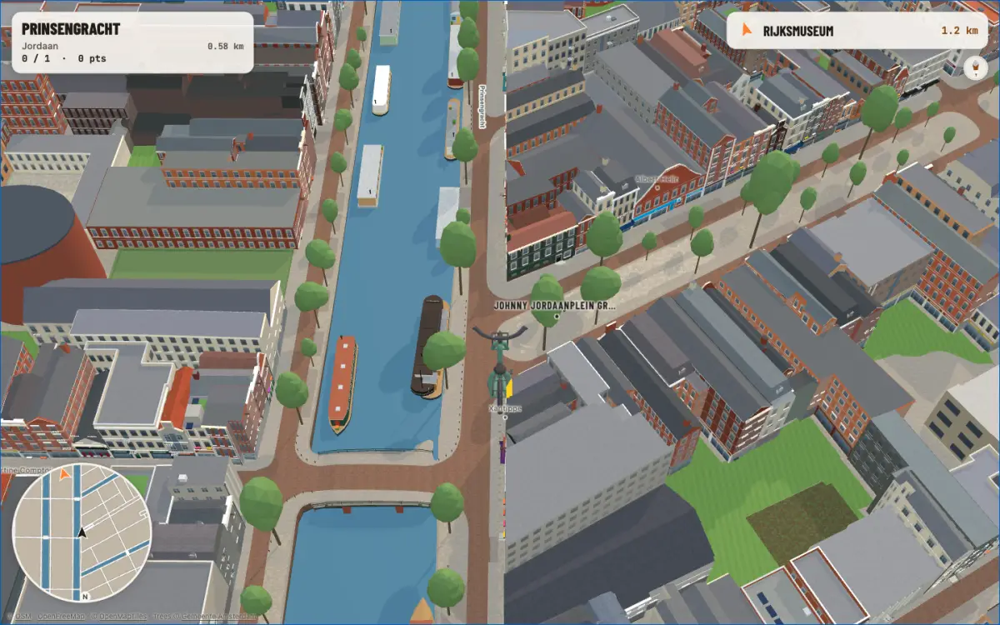
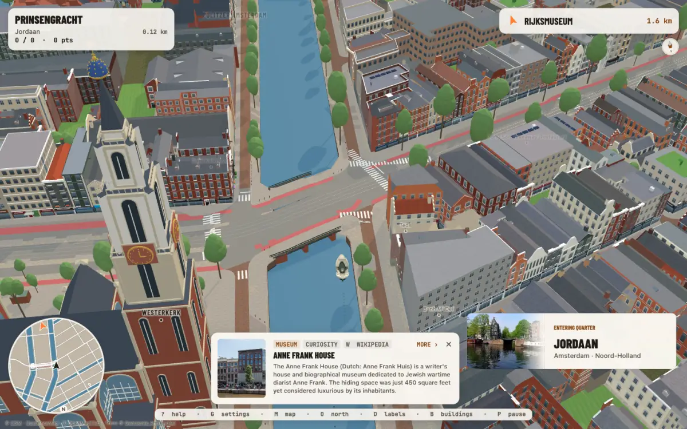
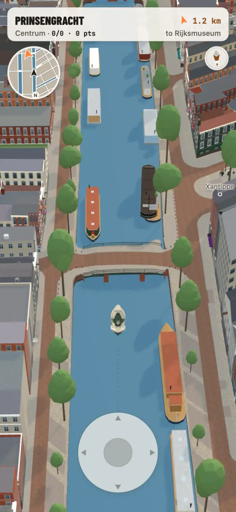
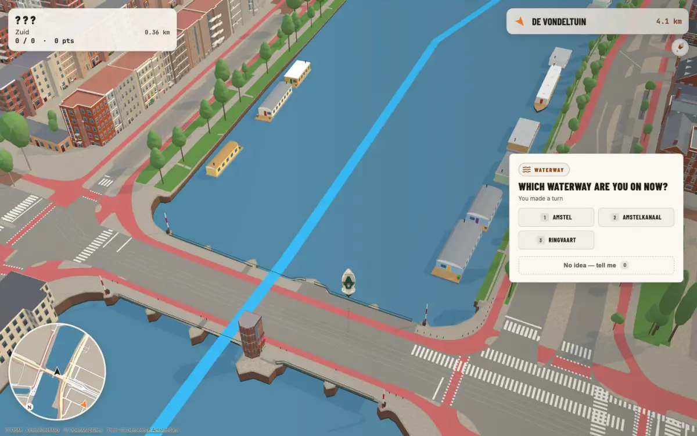
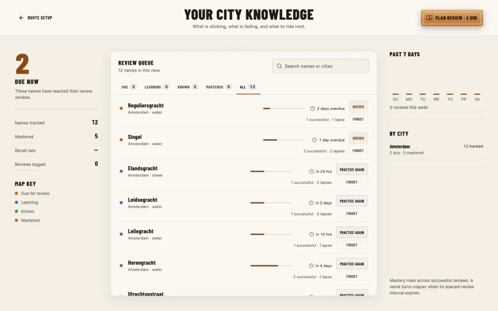
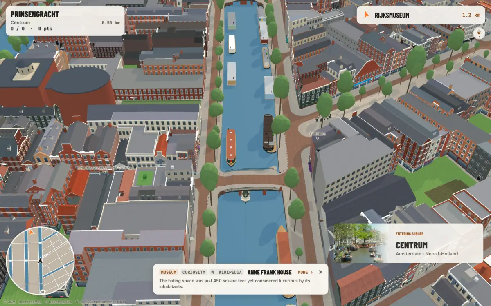
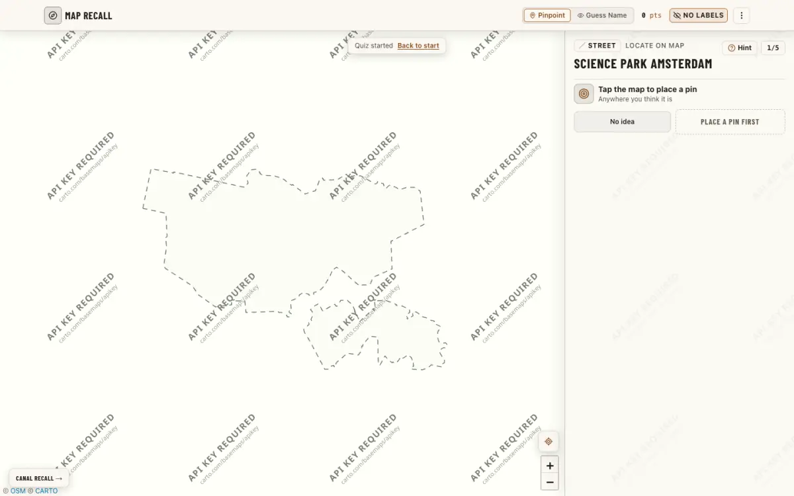

Ride
A boat on the canals or a bike on the streets, from a surprise start, your home, or wherever you are standing.
Steer a boat or a bike through a 3D Amsterdam built from open city data. Every canal and street you pass is a question, and the map keeps the name to itself until you answer.
Free, in the browser, on desktop or phone. No account needed.


Ride along a real canal and a question card asks which one you are on. Nothing on screen gives it away: no labels on the water, no street names on the route. Pick from the choices, or type it on harder settings, and only then does the name appear.
Guessing wrong is part of it. The card tells you a little about the place, so the name has something to stick to.

Every name you meet joins your knowledge. The ones you miss come back on a later ride, spaced out until you know them; the ones you know stop being asked.
Ride from your own address and the first routes stay close to home, then widen as the neighbourhood sticks.

The canals, streets and bridges come from OpenStreetMap; the buildings from the Dutch building registry and its 3D heights. Landmarks and canal houses are modelled from photographs, one by one, so the Westerkerk looks like the Westerkerk.


A boat on the canals or a bike on the streets, from a surprise start, your home, or wherever you are standing.

The quick version on a flat map: one street, canal or neighbourhood at a time, name it or find it. What you learn in one counts in the other.
Ride a theme stop by stop, by bike. Each arrival says why the place is on the list, with its source; finish them all for a tour stamp. The stops stay a surprise until you reach them.
A canal with the wrong name, a bridge you can't cross, a building that doesn't look like itself, or one you'd like to see modelled next. Tell us: reports go straight to the people building it.